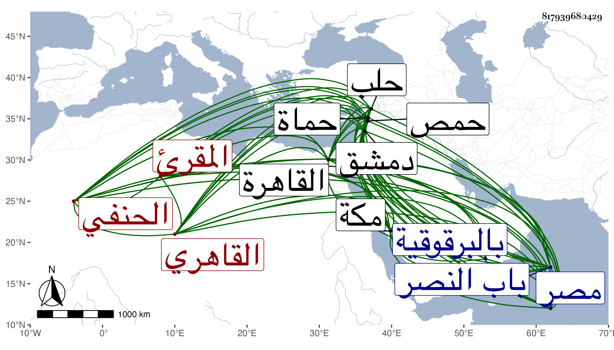

0902Sakhawi.DawLamic.ITO20230111-ara1.EIS1600.817939680429
Biography ID: 817939680429
36
محمد بن علي بن محمد بن أحمد وقيل عبد الله بدل أحمد واقتصر بعضهم على محمد بن علي بن أحمد الشمس أبو عبد الله القاهري الحنفي المقرئ ويعرف بابن الزراتيتي نسبه لقرية من قرى مصر وبابن الغزولي ولكنه بالأول أكثر . ولد كما قرأته بخطه سنة ثمان وأربعين وسبعمائة واشتغل بالعلوم وعني بالقراآت من سنة ثلاث وستين وهلم جرا فكان من شيوخه فيها السيف أبو بكر بن الجندي والشرف موسى الضرير والشمس العسقلاني والتقى البغدادي والتنوخي وابن القاصح ، وسمع الختم من سيرة ابن هشام علي ابن نباتة وفضل الخيل للدمياطي على الحراوي والصحيح علي الصدر بن العلاء بن منصور الحنفي وكان ضابط الأسماء فيه وكذا سمع علي العز أبي اليمن بن الكويك وابنة الشرف وجويرية الهكارية والمطرز والتنوخي وابن الشيخة والحلاوي والسويداوي والتقي الدجوي والجمال الرشيدي والشهاب الجوهري وابن أبي زبا والشمس المنصفي الحنبلي وخلق ، وارتحل في سنة ست وسبعين إلى حلب فسمع بها وبحمص وحماة ودمشق وغيرها ومن شيوخه في الرحلة الزين عمر بن علي بن عمر البقاعي والشمس محمد بن علي بن أبي الكرم المحتسب والشهاب أحمد بن محمد بن أحمد بن الصيرفي وسويد بن محمد بن سويد الرزاز وعلي بن أحمد بن علي بن قصور وعلي بن عمر بن عبد الله العطار وأبو عمر أحمد بن علي بن عنان وأبو عبد الله محمد بن علي بن خليل بن البحشور والأربعة حمويون والكمال أبو حفص عمر بن التقي إبراهيم بن العجمي والعلاء أبو الحسن علي بن أبي الفتح المعري والكمال والبدر ابنا ابن حبيب والشهاب ابن المرحل والشمس أبو الفضل محمد بن عبد الله بن عبد الباقي والجمال بن العديم والشمس أبو عبد الله محمد بن طلحة بن يوسف والشهاب أحمد بن قطلو والزين عبد الله بن علي ابن الزين عبد الملك بن العجمي والعلاء طيبغا عتيق العلاء بن الكميت والصارم إبراهيم بن بلبان والعز أبو الثناء محمود بن فهد الحلبيون . ورافق في كثير من مسموعه الجمال بن ظهيرة والولي العراقي والبرهان الحلبي ثم شيخنا . ومن شيوخه بمكة النشاوري والأميوطي ، وأجاز له الصلاح بن أبي عمر وابن أميلة وأحمد بن عبد الكريم ويوسف بن عبد الله الحبال وعبد الوهاب السلار وآخرون ، وتميز في القراآت وتصدى لنشرها وانتفع به الأئمة فيها وصار المشار إليه بها في الديار المصرية ورحل اليه من الأقطار وتزاحم عليه الطلبة وتصدر تلاميذه في حياته وأم بجامع ال ملك ثم بالبرقوقية بل ولى مشيخة القراء بها . وكان ممن قرأ عليه شيخنا الزين رضوان ووصفه بالإمام المقرئ المحدث الرحال المكثر من القراءة والسماع وكذا حدث بالكثير سمع منه الفضلاء وممن سمع منه ابن موسى الحافظ ورفيقه الموفق الأبي ، وذكره شيخنا في معجمه وقال أنه سمع من لفظه حديثا واحدا من جزء هلال الحفار يعني الذي أودعه في متبايناته ، وأكثر الناس عنه بأخرة ، وأضر قبل موته بسنوات وأجاز جماعة في القراآت ، وقال في إنبائه : اشتهر بالدين والخير وسمع معنا الكثير وسمعت منه شيئا يسيرا ثم أقبل عليه الطلبة بأخرة فأخذوا عنه القراآت ولازموه وختم عليه جمع جم وأجاز لجماعة وأجاز رواية مروياته لأولادي ونعم الرجل كان ، وكذا قال غير واحد أنه كان رجلا صالحا صيتا حسن الأداء إلى الغاية ، وقال المقريزي صحبناه بمكة ثم تردد إلى بالقاهرة وكنت أثق بديانته ونعم الرجل . مات في ظهر يوم الخميس سادس جمادى الآخرة سنة خمس وعشرين بالقاهرة ودفن خارج باب النصر بالقرب من مدرسة ابن الحاجب رحمه الله وإيانا .
